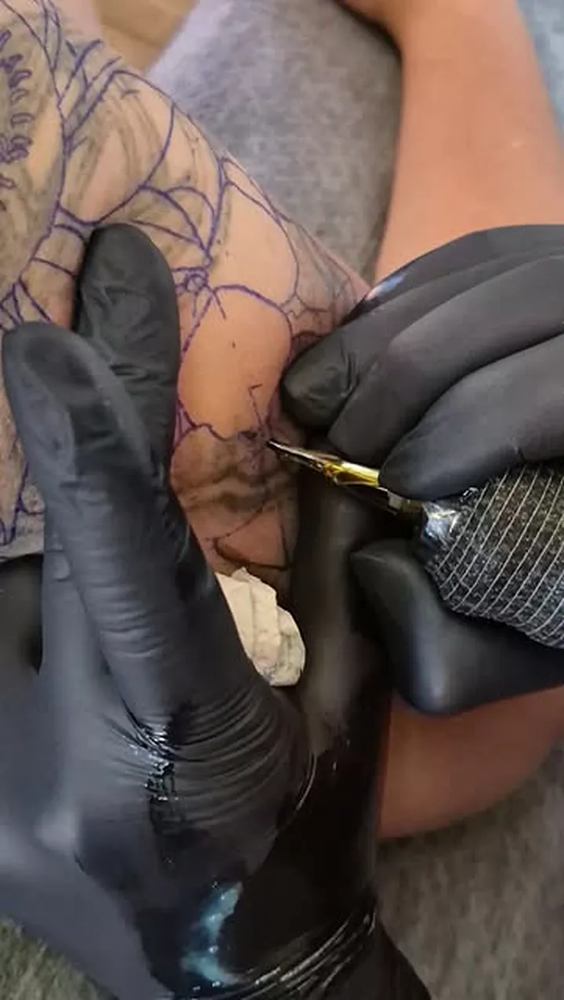
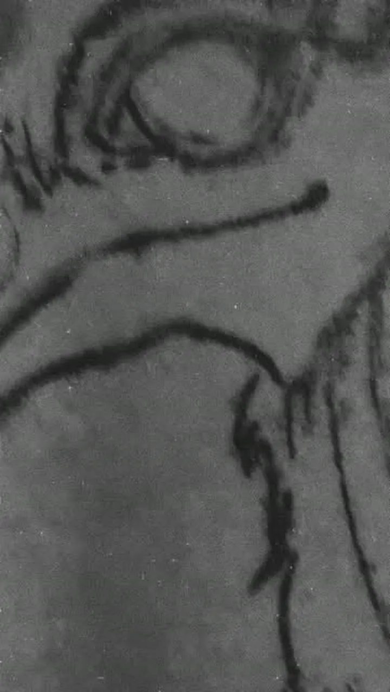

Owner
Carl Jansen
Realism artist in Pretoria. Book a full day and he'll freehand it on the spot.
@carl_the_creator.2.0Realism, freehand and fineline work by five artists, now tattooing from 714 Jacqueline Drive, Garsfontein.
Recent pieces from Carl's chair: big freehand floral sleeves, realism and cover-ups.





Draw on the skin with your finger or mouse. Rough is fine: Carl turns ideas into custom pieces. Save your sketch and send it with your booking.
Five artists who ended up on the same shore. Tap an artist to see their work on Instagram.
Realism artist in Pretoria. Book a full day and he'll freehand it on the spot.
@carl_the_creator.2.0WhatsApp 073 923 1024 is the fastest. An Instagram DM works too.
Tell him the placement and size, and send a reference or your sketch from above.
A sitting or a full day, from small pieces and cover-ups to full sleeves.
Tattoo Island works from inside STIJL MEN in Garsfontein. Sessions are by appointment.